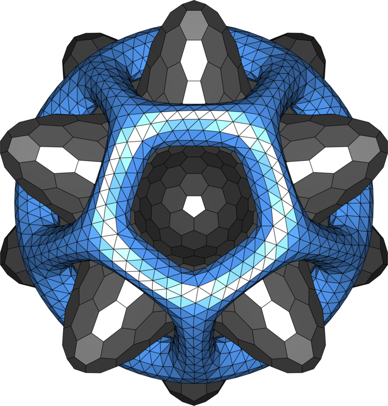
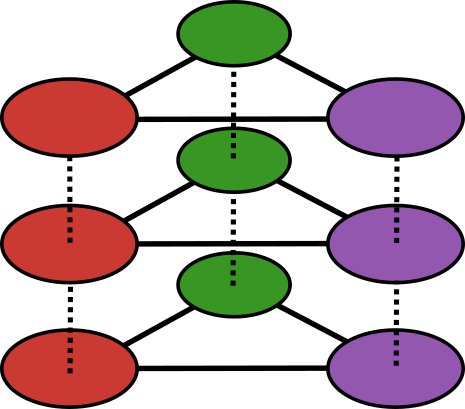
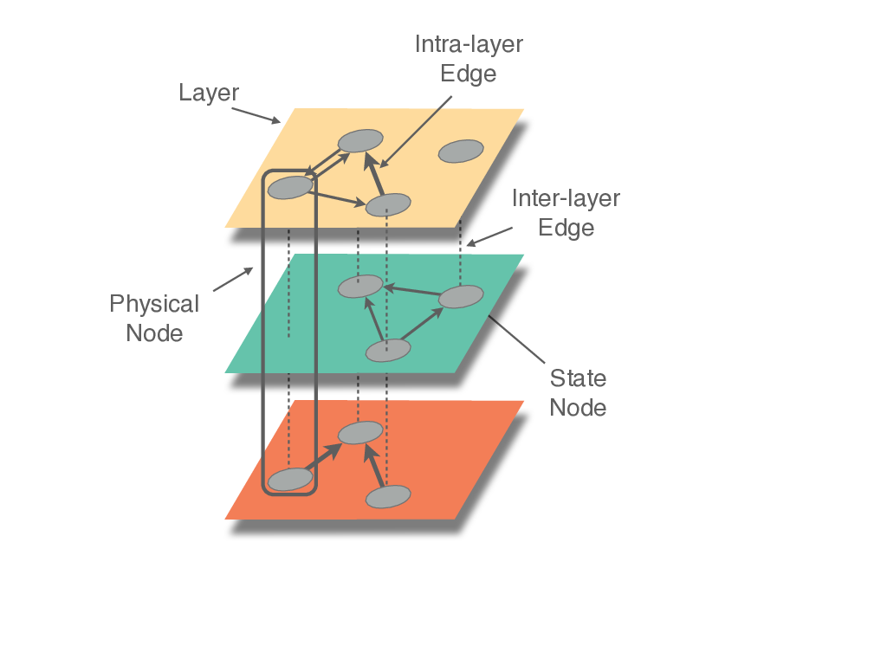
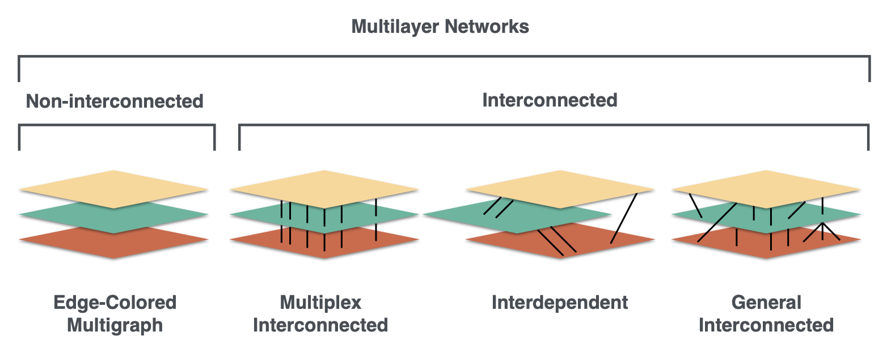
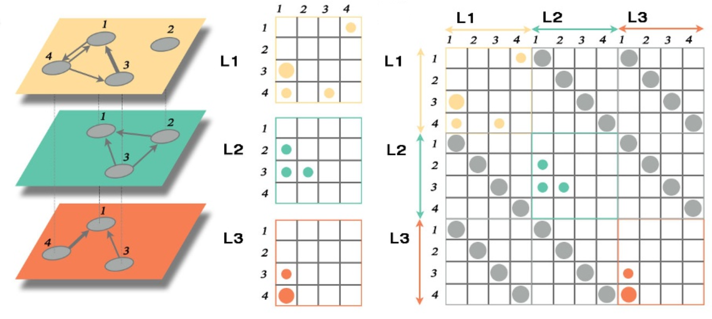
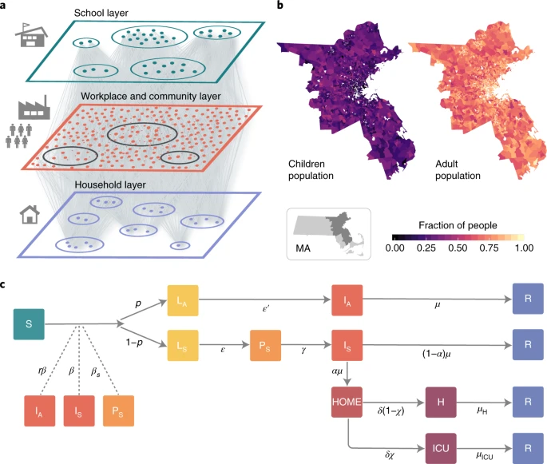
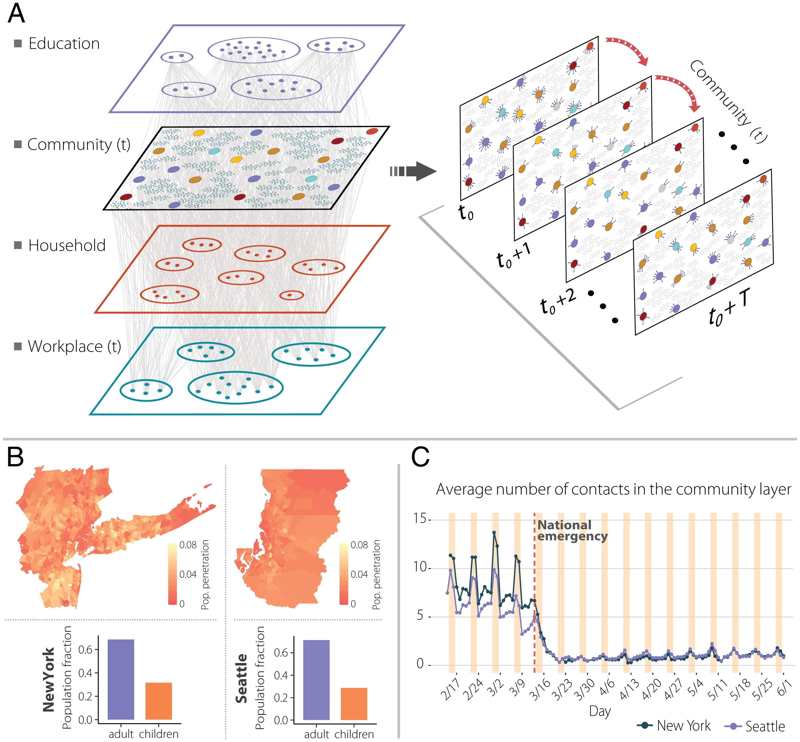

MultilayerGraphs.jl
Multilayer Network Science in Julia
![]()
University of Turin
University of Turin
2023-07-27
🎬 Introduction
Outline
1️⃣ Theory
2️⃣ Applications
3️⃣ Practice
Resources
 Paper

📓 Theory
Conceptual Framework
- Network
- Graph
- Vertex (
MultilayerVertex) - Node (
Node) - Layer (
Layer) - Intra-layer edge (
MultilayerEdge) - Inter-layer edge (
MultilayerEdge) - Interlayer (
Interlayer) - Multilayer (
MultilayerGraph)

Conceptual Framework
Intra-layer Interactions
- Self
- Endogenous
Inter-layer interactions
- Exogenous
- Intertwining

Mathematical Framework
Mono-Layer Adjacency Tensor (WeightTensor)
\[\begin{align*} W_j^i&=\sum_{a, b=1}^N w_{a b} e^i(a) e_j(b)=\sum_{a, b=1}^N w_{a b} E_j^i(a b) \end{align*}\]
Multi-Layer Adjacency Tensor (WeightTensor)
\[\begin{align*} M_{j \beta}^{i \alpha}&=\sum_{a, b=1}^N \sum_{p, q=1}^L w_{a b}(p q) e^i(a) e_j(b) e^\alpha(p) e_\beta(q) \\ &=\underbrace{m_{i \alpha}^{j \beta} \delta_\alpha^\beta \delta_i^j+m_{i \alpha}^{j \beta} \delta_\alpha^\beta\left(1-\delta_i^j\right)}_{\text {intra-layer}}+\underbrace{m_{i \alpha}^{j \beta}\left(1-\delta_\alpha^\beta\right) \delta_i^j+m_{i \alpha}^{j \beta}\left(1-\delta_\alpha^\beta\right)\left(1-\delta_i^j\right)}_{\text {inter-layer}} \\ &=\underbrace{m_{i \alpha}^{i \alpha}}_{\text {self}}+\underbrace{m_{i \alpha}^{j \alpha}}_{\text {endogenous}}+\underbrace{m_{i \alpha}^{j \beta}}_{\text {exogenous}}+\underbrace{m_{i \alpha}^{i \beta}}_{\text {intertwining}} \end{align*}\]
Mathematical Framework
Supra-Adjacency Matrix (SupraWeightMatrix)

Mathematical Framework
Metrics
Degree Centrality (degree)
\(k_i=\sum_{\alpha, \beta=1}^L \sum_{j=1}^N M_{j \beta}^{i \alpha}=M_{j \beta}^{i \alpha} u_\alpha^\beta u^j\)
Eigenvector Centrality (eigenvector_centrality)
\(\sum_{i, \alpha} M_{j \beta}^{i \alpha} \Theta_{i \alpha}=\lambda_1 \Theta_{j \beta}\)
Modularity (modularity)
\(Q=\frac{1}{\mathcal{K}} S_{\alpha \tilde{\rho}}^a B_{\beta \tilde{\sigma}}^{\alpha \tilde{\rho}} S_a^{\beta \tilde{\sigma}}\)
Von Neumann Entropy (von_neumann_entropy)
\(\mathcal{H}(M)=-\Lambda_{\beta \tilde{\delta}}^{\alpha \tilde{\gamma}} \log _2\left[\Lambda_{\alpha \tilde{\gamma}}^{\beta \tilde{\delta}}\right]\)
🔬 Applications
Multilayer Network Epidemiology
 
🎯 Future Developments
Future Developments
- Import/export
- Data visualisation
- Coverage evolution (e.g. see De Domenico (2014))
- Community detection algorithms (e.g. see De Domenico et al. (2015))
- Laplacian matrix
- Components (e.g. connected, giant connected, giant intersection, giant viable)
- Multiplexity dimensions (“aspects”)
- Global descriptors (e.g. see De Domenico (2013));
- More multilayer centralities / versatilities (e.g. see De Domenico et al. (2015));
- …
For further information see the related issues.
📚 References
Theory
Applications
💻 Practice
Tutorial
# Import necessary dependencies
using Distributions, Graphs, SimpleValueGraphs
using MultilayerGraphs
# Set the number of nodes
const n_nodes = 100
# Create a list of nodes
const node_list = [Node("node_$i") for i in 1:n_nodes]
# Create a simple directed layer
n_vertices = rand(1:100) # Number of vertices
layer_simple_directed = layer_simpledigraph( # Layer constructor
:layer_simple_directed, # Layer name
sample(node_list, n_vertices; replace=false), # Nodes represented in the layer
Truncated(Normal(5, 5), 0, 20), # Indegree sequence distribution
Truncated(Normal(5, 5), 0, 20) # Outdegree sequence distribution
)
# Create a simple directed weighted layer
n_vertices = rand(1:n_nodes) # Number of vertices
n_edges = rand(n_vertices:(n_vertices * (n_vertices - 1) - 1)) # Number of edges
layer_simple_directed_weighted = layer_simpleweighteddigraph( # Layer constructor
:layer_simple_directed_weighted, # Layer name
sample(node_list, n_vertices; replace=false), # Nodes represented in the layer
n_edges; # Number of randomly distributed edges
default_edge_weight=(src, dst) -> rand() # Function assigning weights to edges
)
# Create a simple directed value layer
n_vertices = rand(1:n_nodes) # Number of vertices
n_edges = rand(n_vertices:(n_vertices * (n_vertices - 1) - 1)) # Number of edges
default_vertex_metadata = v -> ("vertex_$(v)_metadata",) # Vertex metadata
default_edge_metadata = (s, d) -> (rand(),) # Edge metadata
layer_simple_directed_value = Layer( # Layer constructor
:layer_simple_directed_value, # Layer name
sample(node_list, n_vertices; replace=false), # Nodes represented in the layer
n_edges, # Number of randomly distributed edges
ValDiGraph(
SimpleDiGraph{Int64}();
vertexval_types=(String,),
vertexval_init=default_vertex_metadata,
edgeval_types=(Float64,),
edgeval_init=default_edge_metadata,
),
Float64;
default_vertex_metadata=default_vertex_metadata, # Vertex metadata
default_edge_metadata=default_edge_metadata # Edge metadata
)
# Create a list of layers
layers = [layer_simple_directed, layer_simple_directed_weighted, layer_simple_directed_value]
# Create a simple directed interlayer
n_vertices_1 = nv(layer_simple_directed) # Number of vertices of layer 1
n_vertices_2 = nv(layer_simple_directed_weighted) # Number of vertices of layer 2
n_edges = rand(1:(n_vertices_1 * n_vertices_2 - 1)) # Number of interlayer edges
interlayer_simple_directed = interlayer_simpledigraph( # Interlayer constructor
layer_simple_directed, # Layer 1
layer_simple_directed_weighted, # Layer 2
n_edges # Number of edges
)
# Create a simple directed meta interlayer
n_vertices_1 = nv(layer_simple_directed_weighted) # Number of vertices of layer 1
n_vertices_2 = nv(layer_simple_directed_value) # Number of vertices of layer 2
n_edges = rand(1:(n_vertices_1 * n_vertices_2 - 1)) # Number of interlayer edges
interlayer_simple_directed_meta = interlayer_metadigraph( # Interlayer constructor
layer_simple_directed_weighted, # Layer 1
layer_simple_directed_value, # Layer 2
n_edges; # Number of edges
default_edge_metadata=(src, dst) -> # Edge metadata
(edge_metadata="metadata_of_edge_from_$(src)_to_$(dst)",),
transfer_vertex_metadata=true # Boolean deciding layer vertex metadata inheritance
)
# Create a list of interlayers
interlayers = [interlayer_simple_directed, interlayer_simple_directed_meta]
# Of course all methods such as add/rem_vertex!, add/rem_edge! work as expected on Layers and Interlayers
# Create a simple directed multilayer graph
multilayerdigraph = MultilayerDiGraph( # Constructor
layers, # The (ordered) collection of layers
interlayers; # The manually specified interlayers
# The interlayers that are left unspecified
# will be automatically inserted according
# to the keyword argument below
default_interlayers_structure="multiplex"
# The automatically specified interlayers will have only diagonal couplings
)
# Layers and interlayer can be accessed as properties using their names
multilayerdigraph.layer_simple_directed_value
multilayerdigraph.interlayer_layer_simple_directed_layer_simple_directed_weighted # Name is complicated since it was automatically assigned. Whole interlayers chan be automatically specified.
# Create a node
new_node_1 = Node("new_node_1")
# Add the node to the multilayer graph
add_node!(multilayerdigraph, new_node_1)
# Create a vertex representing the node
new_vertex_1 = MV( # Constructor (alias for "MultilayerVertex")
new_node_1, # Node represented by the vertex
:layer_simple_directed_value, # Layer containing the vertex
("new_metadata",) # Vertex metadata
)
# Add the vertex
add_vertex!(
multilayerdigraph, # MultilayerDiGraph the vertex will be added to
new_vertex_1 # MultilayerVertex to add
)
# Create another node in another layer
new_node_2 = Node("new_node_2")
# Create another vertex representing the new node
new_vertex_2 = MV(new_node_2, :layer_simple_directed_value)
# Add the new vertex
add_vertex!(
multilayerdigraph,
new_vertex_2;
add_node=true # Add the associated node before adding the vertex
)
# Create an edge
new_edge = MultilayerEdge( # Constructor
new_vertex_1, # Source vertex
new_vertex_2, # Destination vertex
("some_edge_metadata",) # Edge metadata
)
# Add the edge
add_edge!(
multilayerdigraph, # MultilayerDiGraph the edge will be added to
new_edge # MultilayerVertex to add
)
# Compute the global clustering coefficient
multilayer_global_clustering_coefficient(multilayerdigraph)
# Compute the overlay clustering coefficient
overlay_clustering_coefficient(multilayerdigraph)
# Compute the multilayer eigenvector centrality
eigenvector_centrality(multilayerdigraph)
# Compute the multilayer modularity
modularity(
multilayerdigraph,
rand([1, 2, 3, 4], length(nodes(multilayerdigraph)), length(multilayerdigraph.layers))
)Thanks 🙏
Outline
1️⃣ Theory
2️⃣ Applications
3️⃣ Practice